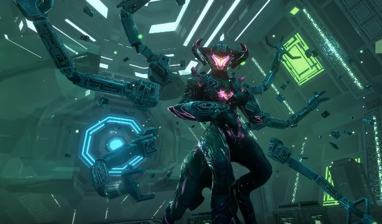
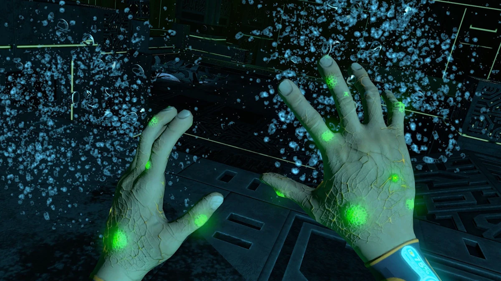
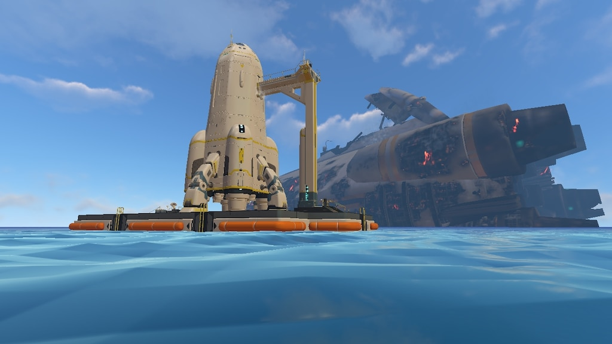

A Queda da Aurora
A Aurora era uma gigantesca nave da Alterra enviada para uma missão de exploração. Durante sua aproximação do planeta 4546B, ela é atingida pelo sistema de defesa alienígena, caindo no oceano e deixando apenas um sobrevivente. A partir desse momento, começa uma luta pela sobrevivência em um planeta desconhecido e repleto de perigos.

Os Precursores
Ao explorar as profundezas do planeta, o sobrevivente encontra enormes instalações construídas por uma antiga civilização alienígena conhecida como Architects. Essas estruturas escondem informações sobre a bactéria Kharaa e o motivo pelo qual nenhuma nave consegue deixar o planeta.

A Infecção
Todos os seres vivos do planeta foram afetados pela bactéria Kharaa. O protagonista também acaba infectado, tornando impossível escapar enquanto a arma alienígena permanecer ativa. A busca pela cura passa a ser o principal objetivo da jornada.

Sea Emperor Leviathan
Nas profundezas do planeta vive o Sea Emperor Leviathan, a última criatura de sua espécie. Ela ajuda o sobrevivente a produzir a Enzyme 42, substância capaz de eliminar a infecção e finalmente desativar o sistema de quarentena.

O Retorno para Casa
Com a cura obtida e o sistema de defesa desativado, o sobrevivente reúne os recursos necessários para construir o foguete Neptune. Após deixar 4546B, sua longa jornada de sobrevivência finalmente chega ao fim.